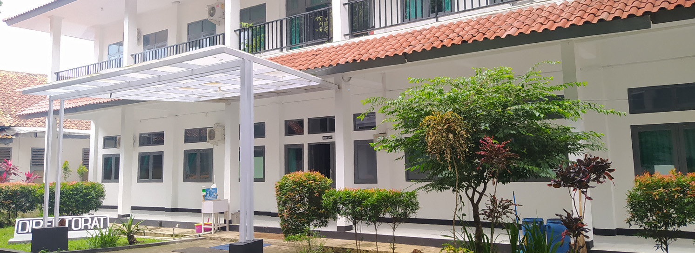

Politeknik Negeri Subang adalah perguruan tinggi negeri pertama di Kabupaten Subang. Pendidikan Politeknik Negeri Subang merupakan Pendidikan Tinggi Vokasi Program Diploma III yaitu program pendidikan yang bertujuan menyiapkan tenaga ahli, terampil, siap kerja, dan mampu bersaing di bidangnya yang ditempuh dalam kurun waktu 3 tahun atau 6 semester.
Pilih Prodi di Politeknik Negeri Subang
| Prodi | mahasiswa Aktif |
|---|---|
| D3 Sistem Informasi | 181 |
| D4 Teknologi Rekayasa Perangkat Lunak | 183 |
| D3 Agroindustri | 185 |
| D4 Teknologi Produksi Tanaman Pangan | 187 |
| D3 Teknik Mesin | 189 |
| D4 Teknolgi Manufaktur | 191 |
| D3 Keperawatan | 193 |
Pilihan Prodi di Politeknik Negeri Subang
Daftar PMB